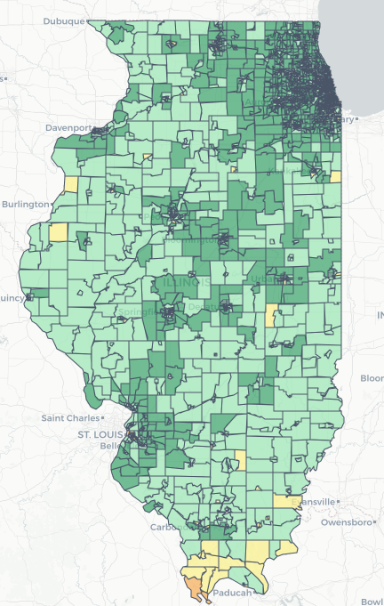
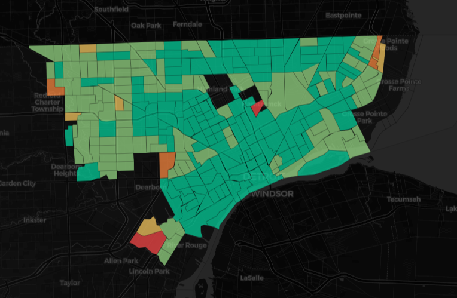
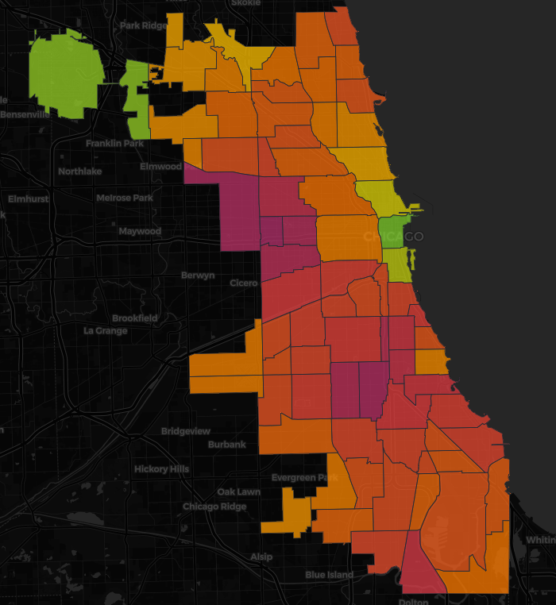

Case Studies

Illinois Broadband Gap Analysis
FCC broadband data has a well-known flaw: it marks a census block as covered if even one address can get service. That overstates coverage significantly in rural and low-income areas. I built this to go beyond that number — combining real coverage gaps with poverty and educational attainment so planners can see where investment actually matters, not just where FCC says it's fine. Built across all 3,263 Illinois census tracts, with adjustable index weights.

Police Response Deserts — Detroit 911 Equity Analysis
I pulled Detroit CAD dispatch records and ran OLS regression across 139 census tracts to test a direct question: do police response times in Detroit correlate with neighborhood race and income? The answer was yes, significantly, on both variables. This maps where the delays are worst and what the neighborhoods look like.

The Lead Pipe Map — Chicago Lead Service Line Prediction
Chicago has around 400,000 known lead service lines — and another 800,000 properties where the pipe material is just unverified. I trained an XGBoost classifier on Cook County Assessor records to predict which of those unknown properties are likely connected by lead, using construction year, proximity to known lead mains, and water main age as the top predictors. Ended up flagging about 112,000 high-risk properties at 0.87 AUC-ROC.

Power Grid Fragility — Blackout Vulnerability Index
I wanted to know which US counties were genuinely at risk for extended blackouts — not just the ones with bad weather, but the ones where multiple risk factors stack up at once. I combined EIA grid reliability data, FEMA NRI hazard scores, outage frequency, elderly population share, and poverty rate into a weighted index across all 3,144 US counties. 847 came back high or very high risk.